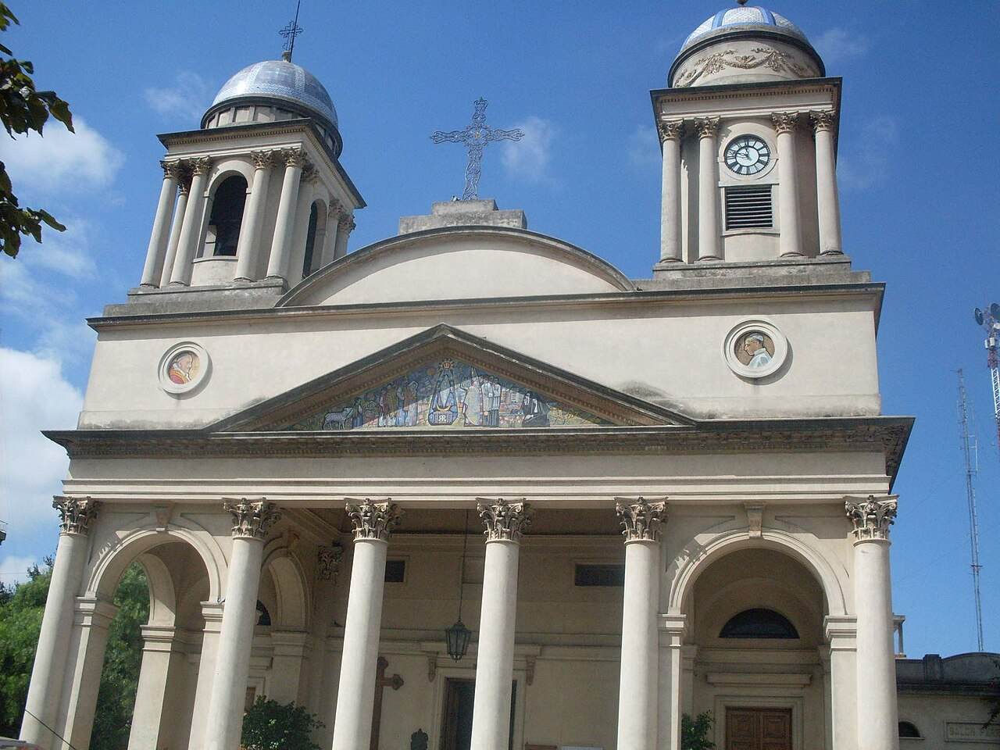

Colegio Nuestra Señora del Buen Viaje de Morón
Secundario con orientación en Ciencias Sociales
Fecha de inicio: 2008
Fecha de finalización: 2014
Formación enfocada en el análisis crítico de procesos sociales, políticos y económicos, desarrollando habilidades avanzadas de investigación y manejo de fuentes. Fortalecí capacidades de comunicación asertiva, oratoria y debate, fundamentales para la expresión de ideas y el trabajo colaborativo. Esta base académica me brindó las herramientas necesarias para abordar problemáticas complejas con un enfoque ético y ciudadano.


